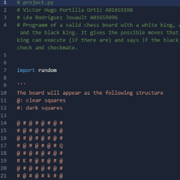
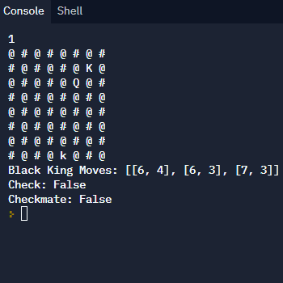
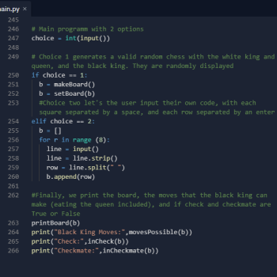
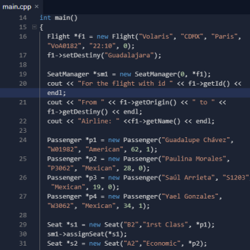
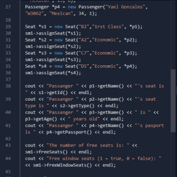
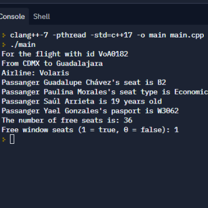
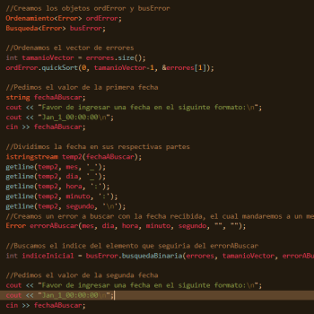
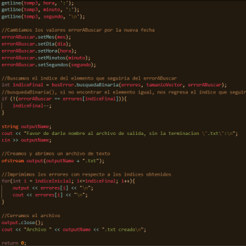
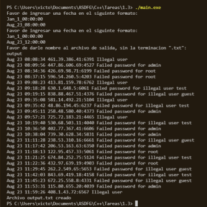

Lenguajes de programación
Portafolio
Proyecto Capstone
|  |  |  |
Este proyecto consistió en diseñar una aplicación de consola que generara un tablero de ajerdez. Dicho tablero contiene una reina y rey de cada color, en posiciones al azar o dadas por el usuario. Entonces, el programa daría todos los movimientos posibles para el rey de las piezas negras, si existen, y el estado del mismo (jaque o jaque mate). Este fue mi primer gran proyecto en Python.
Diciembre 2020
Seat Manager
|  |  |  |
Este proyecto es una aplicación de consola capaz de almacenar estados de vuelos. Esta puede desplegar diferentes datos de los pasajeros, vuelos, y asientos. Con esto, también puede indicarnos cuántos asientos hay disponibles y cuántos de estos cuantan con una ventana.
Junio 2021
Búsqueda en bitácora
|  |  |  |
Este proyecto es una aplicación de consola que aprovecha algoritmos de ordenamiento y búsqueda para filtrar los ingresos de diferentes IPs a un servidor. El usuario solicita un rango de fechas específico, y el programa devuelve todos los ingresos en ese rango, y los almacena en un archivo de texto, cuyo nombre es proporcionado por el mismo usuario.
Septiembre 2021
Hobbies
- Videojuegos
- Jardinería
- Cocina
- Animación